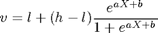
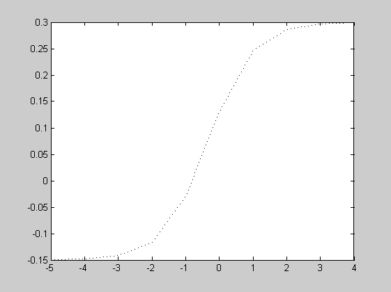
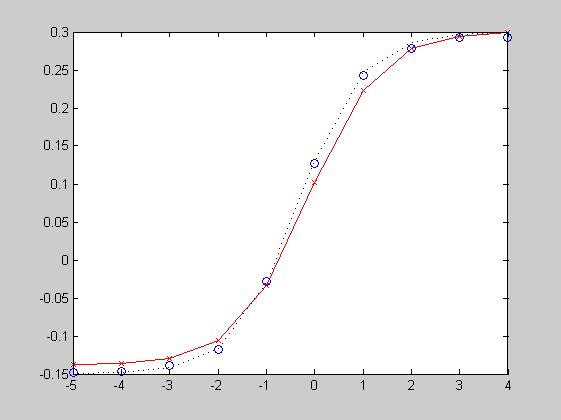

FIT4PL Fit a nonlinear model to a parameter (demo script)
By default, DMAT only allows users to fit linear models (because it uses design matrices to apply simple models. However, this is only a practical restriction, and not a theoretical one. A simple feature (the 'NoFitting' option of multiestv4) of DMAT can help more experienced users to fit models of higher complexity.
Contents
- Generate some data with nonlinear drifts
- Build an OPTIONS structure as you usually would
- Use MULTIESTV4 to prepare the objective function
- Adapt the objective to your needs
- Estimate parameters of the new model
- Process the output carefully
- Plot drift rates from the nonlinear model
- Estimate a free model
- Plot drift rates from the free model
Generate some data with nonlinear drifts
We're generating data where all parameters are constant, except for the drift rate, which varies nonlinearly with a covariate X. The nonlinear link function is the four-parameter logistic function:

The parameters are:
- Upper asymptote h = 0.30;
- Lower asymptote l = -0.15;
- Location b = 0.50;
- Slope a = 1.50;
clear all close all x = linspace(-5,4,10); logistic = @(p,x) p(2)+(p(1)-p(2))./(1+exp(-p(4).*x-p(3))); p = [0.3 -0.15 0.5 1.5]; % [h l b a] drifts = logistic(p,x); param = repmat(standardparset(0,0),5,1); param(:,7) = drifts
param =
0.0800 0.3000 0.0800 0.0400 0.0200 0.0200 -0.1496
0.0800 0.3000 0.0800 0.0400 0.0200 0.0200 -0.1482
0.0800 0.3000 0.0800 0.0400 0.0200 0.0200 -0.1419
0.0800 0.3000 0.0800 0.0400 0.0200 0.0200 -0.1159
0.0800 0.3000 0.0800 0.0400 0.0200 0.0200 -0.0290
0.0800 0.3000 0.0800 0.0400 0.0200 0.0200 0.1301
0.0800 0.3000 0.0800 0.0400 0.0200 0.0200 0.2464
0.0800 0.3000 0.0800 0.0400 0.0200 0.0200 0.2868
0.0800 0.3000 0.0800 0.0400 0.0200 0.0200 0.2970
0.0800 0.3000 0.0800 0.0400 0.0200 0.0200 0.2993
This is what the drifts look like:
plot(x,drifts,'k:')
 data = multisimul(param,10000,1);
Build an OPTIONS structure as you usually would
But add the field 'NoFitting' and assign it a true value (any integer except 0, or just true).
desmat = [{'1'},{'1'},{'1'},{'1'},{'1'},{'1'},{[]}];
wd = 6; % number of free variables without drift, keeps code flexible
options = struct('DesignMatrix',{desmat},...
'Name','Nonlinear Demo I',...
'ShortSimplexRuns',5,...
'MaxIter',10000,...
'ObjectiveDecimals',4,...
'NoFitting',true);
Use MULTIESTV4 to prepare the objective function
Calling multiestv4 with this options structure will not initiate parameter estimation, but will merely prepare the objective function and add it to the options structure:
options = multiestv4(data,options)
options =
DesignMatrix: {1x7 cell}
Display: 'off'
EWMA: [1x1 struct]
EstimationMethodScalar: 5
FixedBinEdges: []
FixedValues: [10x7 double]
Guess: [10x7 double]
GuessMethodScalar: 1
LongSimplexRuns: 1
MaxIter: 10000
Name: 'Nonlinear Demo I'
NoFitting: 1
NonparametricBootstrap: 0
ObjectiveDecimals: 4
OutlierMax: []
OutlierMin: []
OutlierTreatment: 'None'
ParameterDecimals: 7
ParametricBootstrap: 0
Percentiles: []
ShortSimplexRuns: 5
SpecificBias: [10x1 double]
nsets: 10
method: 1
InBootstrap: 0
controls: [1x1 struct]
npar: 7
objecfun: @(x) (multifitv4(x,dcel2,options.controls,options.method))
Adapt the objective to your needs
Now, starting from this objective function, we can construct a new, higher-order objective function that reduces the number of parameters even more. For example:
newobj = @(y) options.objecfun([reshape(y(1:wd),1,wd),...
logistic(y(wd+(1:4)),x)]);
Estimate parameters of the new model
Now, rearrange the fields a bit, inserting the new objective:
options.oldobj = options.objecfun; options.objecfun = newobj; options.NoFitting = false;
Also insert a new initial guess (make sure you've got enough parameters!):
guess = [.5 -.1 0 1];
options.controls.small = [options.controls.small(1:wd)' guess];
options.controls.small([5 6])=[.03 .1]; % far away from the edge
And run the generative algorithm:
[output options]=genalg(options);
Guess : 392179.84817 (31-Aug-2006 15:44:55)
Simplex 1: 375940.76184 (31-Aug-2006 15:45:16)
Simplex 2: 375619.26158 (31-Aug-2006 15:45:38)
Simplex 3: 375602.11273 (31-Aug-2006 15:45:58)
Simplex 4: 375597.53287 (31-Aug-2006 15:46:19)
Simplex 5: 375595.71205 (31-Aug-2006 15:46:40)
Simplex 6: 375405.11482 (31-Aug-2006 15:49:23)
Final X2 : 375380.09008 (31-Aug-2006 15:50:56)
Process the output carefully
The output as genalg returns it, is based on a linear model and thus not completely correct. You need to extract the design vector of the level 2 model and restore the level 1 design vector from that.
designvec_l2 = options.controls.small; designvec_l1 = [designvec_l2(1:wd) logistic(designvec_l2(wd+(1:4)),x)]; options.controls.small = designvec_l1; options.controls = bigger(options.controls); minimum = options.controls.large;
Plot drift rates from the nonlinear model
hold on plot(x,minimum(:,7),'rx-') hold off

Estimate a free model
output2 = multiestv4(data,'DesignMatrix',desmat,... 'Name','Nonlinear Demo II',... 'ShortSimplexRuns',5,... 'MaxIter',10000,... 'ObjectiveDecimals',4,... 'Guess',minimum);
Guess : 375380.09008 (31-Aug-2006 15:50:56)
Simplex 1: 375239.48834 (31-Aug-2006 15:51:13)
Simplex 2: 375239.16946 (31-Aug-2006 15:51:32)
Simplex 3: 375239.16285 (31-Aug-2006 15:51:52)
Simplex 4: 375239.16277 (31-Aug-2006 15:52:11)
Simplex 5: 375239.16277 (31-Aug-2006 15:52:31)
Simplex 6: 375239.16273 (31-Aug-2006 15:53:05)
Final X2 : 375239.16273 (31-Aug-2006 15:53:23)
The recovered sZ parameters are suspect.
The recovered st parameters are suspect.
Trying again.
Guess : 387911.21778 (31-Aug-2006 15:53:23)
Simplex 1: 377611.17161 (31-Aug-2006 15:53:41)
Simplex 2: 375964.11369 (31-Aug-2006 15:53:59)
Simplex 3: 375306.52541 (31-Aug-2006 15:54:17)
Simplex 4: 375262.88397 (31-Aug-2006 15:54:37)
Simplex 5: 375238.76899 (31-Aug-2006 15:54:56)
Simplex 6: 375228.75482 (31-Aug-2006 15:57:09)
Final X2 : 375228.75482 (31-Aug-2006 15:57:33)
Plot drift rates from the free model
hold on plot(x,output2.Minimum(:,7),'bo') hold off